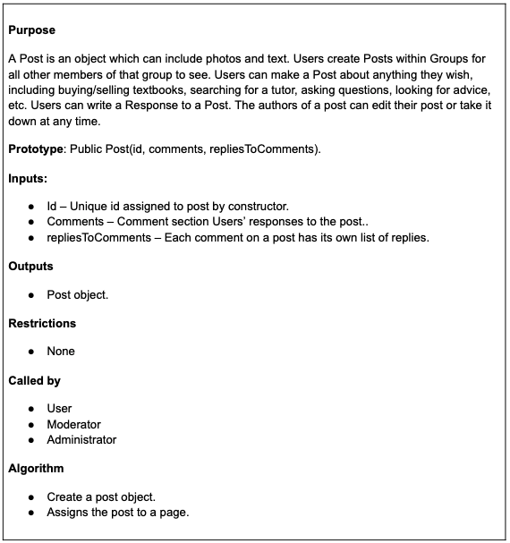
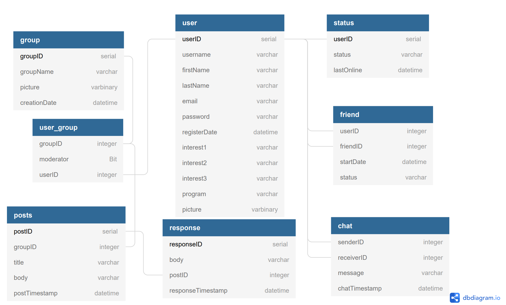
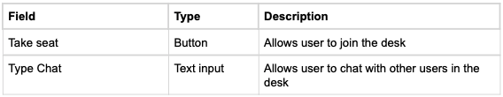

Software Design
Version 3.0
Table of Contents
- List of Tables
- 1. Introduction
- 2. System Overview
- 3. Design Considerations
- 4. Architectural Strategies
- 5. Design Decisions, Policies, and Tactics
- 6. System Architecture
- 7. Architectural and Component-level Design
- 8. Data Design
- 9. User Interface Design
- 10. Data Dictionary
- Version History
List of Tables
Section 1
Section 9
Section 10
1. Introduction
This section provides an overview of the StudySpace Software Design Document.
1.1 Purpose
- To provide a general description of the StudySpace software architecture.
- To describe the functional structure, data, and algorithms to be implemented.
- To describe the behavioral requirements.
- To identify the required system resources needed by the system’s software developers.
- To demonstrate the means to fulfill the requirements as specified in the StudySpace Software Requirements Specifications (SRS) document.
- To serve as a reference and support for the software developers in the creation of the StudySpace web application.
1.2. Audience
The primary intended audience of this document is current and future developers tasked with the creating, testing, and maintenance of the StudySpace web application.
The secondary intended audience of this document is the project client, Mr. David Brown.
1.3. Scope
1.3.1 Software Requirements
1.4. Feature Ranking
1.4.1 Must Haves
- User Creation functionality
- Group Creation functionality
-
User Profile Page displaying the users:
- Interests
- User Matches
- Joined Groups
-
Home Page with:
- Main Navigation Bar
- Sidebar
- Top Groups Grid
- Top Posts Grid
-
Groups Home Page with:
- Main Navigation Bar, Sidebar, and Search Bar
- Page Creation functionality
- Desk Creation functionality
- Post Creation functionality
- Friends Page display
- Message History display
1.4.2 Nice-to-Haves
-
Landing Page with:
- Sign-in functionality
- Sign-up functionality
-
User Profile Page with:
- Setting Interests functionality
- Setting Account Information functionality
- Adding Student Profile to Friends List functionality
- Removing Student Profile from Friends List functionality
1.5. Development Milestones
1.6. Definitions

1.7. Reference Materials
- A Software Design Specification Template
- SOFTWARE DESIGN SPECIFICATION TEMPLATE
- Software Design Document Template
- Software Design Document (SDD) Team O Event Driven DIS PDU Logger (EDDIS system)
- IEEE Standard for Information Technology—Systems Design— Software Design Descriptions
2. System Overview
StudySpace is a web application that provides students a digital space to interact with other like-minded students.
2.1. Brief Description
At the highest level, the StudySpace web application is organized into key system functionalities, key system components, and key UI components.
- Key System Functionalities
- Setting Interests
- User Matching
- Group Interactions
- Key System Components
- Front-end
- Back-end
- Key Visual Subcomponents
- Main Navigation Bar
- Sidebar
- Search Bar
- User Matches Container
- Top Groups Grid
- Pages
- Desks
2.2. Key System Components
-
Front-end
The front-end has the following functions:
- Request data from the endpoints to populate subcomponents with appropriate data.
- Populate UI with data requested from the back-end.
- Assemble pages with the appropriate UI subcomponents and relevant data.
-
Back-end
The back-end has the following functions:
- Get data requested by the front-end.
- Store data entered into user inputs into the database.
- Update data previously existing in the database.
2.3. Key System Functionalities
-
2.3.1. Setting Interests
- Setting Interests is a functionality provided when users create an account.
- The user may only set a maximum of 3 interests. Refer to the definition of Interests for more detail.
-
2.3.2. Pages and Desks
-
A single Group Home Page may have multiple Pages and each Page may
have the following:
- Desks
- Past Posts
- Page Information Display
-
A single Group Home Page may have multiple Pages and each Page may
have the following:
-
2.3.3. User Matching
- User Matching is a functionality occurring after user login where the app displays the icons of students who have similar interests and/or are in the same group(s) as the user.
- User Matching takes into account the Interests set by the user upon the sign-up process.
-
User Matching results in:
- (i) user's being able to see suggested students that have a high similarity with the user's interests (User Matches)
- (ii) suggested groups that are aligned with the user’s Interests (Top Groups).
-
Two users are considered to have a high similarity when:
- The user and the student have at least 2 of the same interests.
- The user and the student have ranked their parameters in a similar order.
2.4. Key UI Components
-
2.4.1. Bars
- Main Navigation Bar — provides links to the user’s profile, message history, and friendship list.
- Sidebar — provides a view of the user’s joined groups (Joined Groups) and Friends Online display.
- Search Bar — allows users to search for groups and users related to their Interests.
-
2.4.2. Containers
- User Matches Container — displays the icons of the user’s User Matches. The User Matches are obtained from the User Matching process.
-
2.4.3. Pages
Each Group Home Page may contain multiple Pages. Contained within a single Page are the following:
- Page Information Display — a quick description of the Page.
- Desks — allows members of a group to send and receive chat messages to and from fellow group members.
- Past Posts Container — display past posts published to the group’s page.
-
2.4.4. Desks
Contained within a single Desk are the following:
- Text Chat — chat message display sent to and from fellow group members along with the first name of each group member.
- Icon Display — display of the icons of each participant in the chat.
- Duration — text describing the duration Desk.
- Status — colored icon describing the status of the Desk, whether or not it is live or expired.
- Take a Seat Button — a button that allows group members to become participants of the Desk.
-
2.4.5. Grids
- Top Groups Grid — displays top groups suggested to the user that they are not a member of. The groups are obtained from the User Matching process.
- Top Posts Grid — displays most upvoted posts in the user’s joined groups.
3. Design Considerations
-
3.1. Assumptions and Dependencies
- User has a stable internet connection
- Compatible with all browsers and operating systems
-
3.2. End-user characteristics
- Creation, editing, and modification of posts
- Moderator has the ability to create, remove, and edit pages
- Moderator can remove user reported comments
-
3.3. General Constraints and Limitations
-
Time and resource limitations
- Voice chat feature between users
-
Security Requirement
- Authorization and password management
- Reliability of accurate matches between users
- All screens must be above 320px in order to meet usability requirements
-
Time and resource limitations
- Clean and simple UI
- Efficient and doesn’t use excessive memory
- Reliable and robust interface
- Documentation of all the code
- Protection of website against third party attacks (security of user data)
- UML diagrams were used to visualize the interactions between users, moderators, and admin.
- Multiple revisions were made at each stage of the software development to ensure that the best possible outcome was achieved.
- SQA performed to ensure that all developers were on the same page and doing the desired task.
3.4. Goals and Guidelines
3.5. Development Methods
The main software used for the design of the UI was Adobe XD. This method was selected due to the rapid prototyping features that it provides. It allows the pages to be distinct and resembling the final design.
4. Architectural Strategies
4.1. Communication Mechanisms
The front-end and back-end of the application will communicate via RESTful API calls.
4.2. Technology Specifications
4.2.1. Back-end
4.2.2. Front-end
4.2.4. Miscellaneous
4.3. Front-end Goals
- The UI of the StudySpace web application will be hosted on Vercel as a SPA.
- The front-end of this application must be able to query and store data in the database using Node.js.
4.4. Back-end Goals
- The back-end of this application will implement a RESTful API connected to an SQLite database.
4.5. Future Plans
The StudySpace web application developed for the project client is meant to be a proof-of-concept (see: Definitions) to demonstrate the team’s understanding of various software design principles and workflows.
4.6. User Interface Paradigms
ReactJS
The main utility comes from easily creating reusable UI components. Each React component has its own system, state, and life cycles.
- Stateless Components — data is fetched from a database and important into the component.
- Conditional Rendering — allows the developer to create distinct components. One potential use for Conditional Rendering is the need to create different error messages for different sources of error.
- Render Props — reduces repetition by allowing components to dynamically render other components.
React aids the front-end developers in creating key reusable components such as the Search Bar and the User Matches Container.
React Redux
This library allows React components to read data from a global 'store' and allows components to dispatch actions to that store to update the state data.
4.7. External Database Management and Persistence
The use of Heroku as the primary platform for deployment will resolve the problem of database persistence. Every time a new user joins the StudySpace web application, the database is updated and re-deployed to Heroku.
Design Decisions, Policies, and Tactics
5.1. Deployment
The StudySpace website will be deployed using vercel, and will be coded in Javascript, HTML, CSS, PostCSS, and Tailwind. Backend is in Python/Django and the database will be done using sqlite.
5.2. Data Storage
Database will be on a server hosted by the StudySpace team
5.3. Coding Guidelines and Conventions
- Front end will be coded using redux and react
- Main coding languages for front end are Javascript, CSS, and HTML
- Backend will be coded using python and django
5.4. Ensuring Requirements Traceability
Requirement Traceability will be ensured using a traceability matrix
5.5. Software Testing
Software is regularly tested by the StudySpace team after every update
- Extensive debugging is done to ensure a smooth and reliable user experience
Github used for version control and postman used to test API endpoints. White box testing handled by the StudySpace team until April 12, 2021.
5.6. Software Maintenance
Software is maintained by the StudySpace team until April 12, 2021.
5.7. File Structure Organization
6. System Architecture
6.1. System Architecture Description
- Sign in Interface is the first page, where the user enters credentials to log into their account
- Home page directs the user to other significant pages like Messages, User profile, Groups
- Search can be used from the homepage to find Matches, Users, Groups, or Desks
6.2. System Architecture Diagram
7. Architectural and Component-level Design
7.1. Class Diagram
7.1.1. Main Class
7.1.2. User Class
7.1.3. Moderator Class
7.1.4. Administrator Class
7.1.5. Friend Class
7.1.6. Group Class
7.1.7. Page Class
7.1.8. Desk Class
7.1.9. Post Class
7.1.10. Events Class
7.1.11. Chat Class
8. Data Design
8.1. Data Structures
8.1.1. Global Data Structure
The database will be used globally to retrieve information regarding many components of StudySpace. Each table in the database has its own respective class. The classes representing the data from the database will also be used globally.
8.1.2. Temporary Data Structure
Data structures for and regarding the DESK feature will be all temporary. Since each DESK instance is only temporary; the data structures related to the DESK feature will also be temporary. As soon as people stop using the DESK, every file/data structure will be deleted.
8.1.3. Database Description
For the database, we start with the user’s general information and assign the user a unique ID. With a user’s ID we will be able to link the user’s friends, preferences, groups the user is part of to the user. To keep track of a user’s private messages with other users, we would also need a table keeping track of messages between any given two users. A post table and a response table would be able to keep track of posts made by a group as well as the comments made on the post.
8.2. Database Diagram
8.3. Database Tables
8.3.1.
8.3.2.
8.3.3.
8.3.4.
8.3.5.
8.3.6.
8.3.7.
9. User Interface Design
9.1. User Interface Design
9.1.1. Color Guidelines
9.1.2. Font Guidelines
We will use default fonts as provided by Tailwind CSS. "San Fransico" and "system-ui" for OSX, "Roboto" for Windows.
9.2. User Interface Views
9.2.1. Landing Page (logged out)
9.2.2. Sign Up View

9.2.3. Home Page (logged in)
9.2.4. Groups Home Page

9.2.5. Desk View
9.2.6. Posts View
9.2.7. User Profile Page
9.2.8. Profile Page (another user)
9.2.9. User Match View

10. Data Dictionary

Version History
Version 1.0 - March 6th, 2021
Design document outline created by:
- Ann Baldonasa
Initial Design document authored by:
- Ann Baldonasa: Sections 1,2,4
- Arvin Benipal: Section 9
- Kevin Lin: Section 8
- Muhammad Hashir: Sections 3,5,6,10
- Zeeshan Jafri: Sections 6,7
First round of SQA conducted by:
- Janelle Tait
- Mackenzie Van Zanden
- Dayton Talarico
- Brian Carvalho
- Rohan Uddin
Version 2.0 - March 21st, 2021
Adjustments:
- Ann Baldonasa: Made changes to sections 1, 2, 4 upon SQA suggestions
- Arvin Benipal: Made changes to UI design (section 9) upon SQA suggestions
- Kevin Lin: Made changes to section 8 upon SQA suggestions
- Muhammad Hashir: Made changes to section 3,5,6,10 upon SQA suggestions
- Zeeshan Jafri: Made changes to Class Diagrams based on SQA, and to Section 7
Second round of SQA conducted by: (roles switched this time)
- Janelle Tait
- Mackenzie Van Zanden
- Dayton Talarico
- Brian Carvalho
- Rohan Uddin
Version 3.0 - March 24th, 2021
Final edits:
- Ann Baldonasa: Made changes to sections 1, 2, 4 upon SQA suggestions
- Kevin Lin: Made changes to section 8 upon SQA suggestions
- Muhammad Hashir: Made changes to section 3,5,6,10 upon SQA suggestions
Document reformatted and converted to HTML by Rohan Uddin.